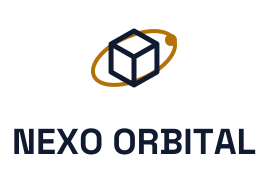
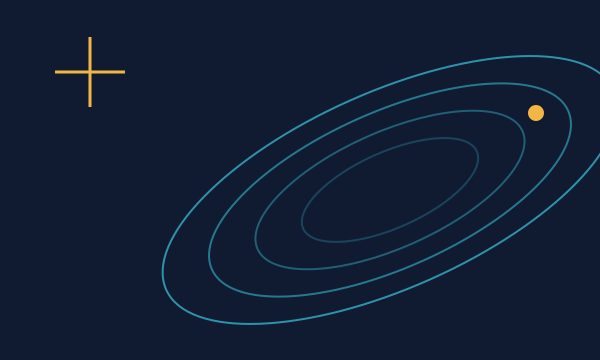
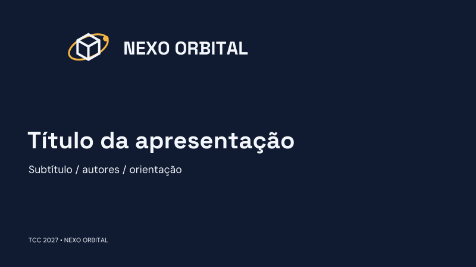
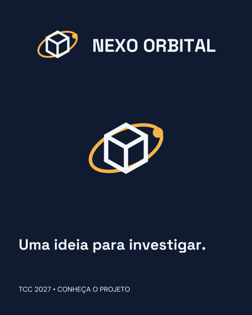
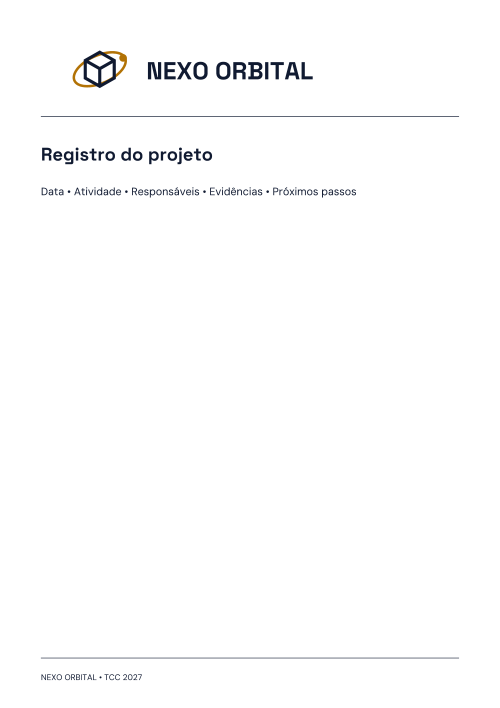

NEXO ORBITAL / TCC 2027 / EDIÇÃO 1.0
Uma missão compartilhada.
Guia de identidade visual de NEXO ORBITAL. CubeSat educacional · demonstrador em solo
01
Uma marca com intenção
O encontro entre um cubo e uma órbita traduz a integração entre estrutura, eletrônica, software e comunicação. A marca assume a precisão de um instrumento de bancada e a curiosidade de uma missão espacial.
O azul profundo organiza a informação, o âmbar destaca decisões e a linha ciano representa telemetria. Diagramas modulares, coordenadas e amplos espaços vazios tornam o projeto reconhecível mesmo sem o logotipo.
Preciso · Exploratório · Colaborativo
Cubo isométrico envolvido por uma órbita inclinada, com um ponto de missão em âmbar.
02
Assinaturas e construção

Versão vertical
Para espaços estreitos, sem redigitar nem reorganizar a marca.
Símbolo
Para avatar e ícone. Na primeira apresentação ao público, o nome deve aparecer por perto.
Malha modular
Módulo de 100 × 100 unidades. Cubo entre x=27–73 e y=23–77, com traço de 5 unidades. Órbita de raios 44 e 22, centrada em (50,50), inclinada em −24°, com traço de 4 unidades. Ponto de missão de raio 6.
Prancheta do símbolo: 100 × 100 unidades. Módulo x: 10 unidades. A malha explica o desenho; use sempre a matriz SVG.
03
Proteção, redução e versões
x
1x em todos os lados; x = 10 unidades do símbolo de 100 × 100. A área externa de proteção não está incluída no arquivo.
Medidas mínimas para o arquivo completo. Símbolo impresso: pelo menos 10 mm. Abaixo do limite de leitura, use o símbolo com o nome em texto acessível. Bordado e gravação precisam de amostra física.
- Não distorcer, girar, recortar ou trocar as cores.
- Não aplicar sombras, contornos nem transparência na marca.
- Sobre fotografia, usar uma placa sólida com área de proteção.
- Preservar os vazios internos da versão monocromática.
04
Paleta e contraste
Clique em uma cor para copiar seu código. RGB é a referência digital; CMYK é aproximação matemática sem perfil ICC.
A versão positiva usa #101A31 e #B27205 sobre #F3F7FB. A versão negativa usa #F3F7FB e #F3B544 sobre #101A31. Essas variantes são específicas da marca; não substituir as cores por aproximação. A versão monocromática usa uma única tinta, #101A31.
Proporção editorial sugerida: 60% fundo neutro, 25% cor escura, 10% destaque principal e 5% apoio. Ajuste à peça preservando legibilidade.
| Uso | Texto / fundo | Razão | Resultado |
|---|---|---|---|
| Texto no papel | #101A31 / #F3F7FB | 16.07:1 | AA texto |
| Texto no escuro | #F3F7FB / #101A31 | 16.07:1 | AA texto |
| Ação | #172019 / #F3B544 | 9.15:1 | AA texto |
Para textos comuns: 4,5:1. Para texto grande: 3:1 (18 pt regular ou 14 pt negrito). Inclua foco visível, rótulos e estados por texto ou ícone. Referência W3C.
05
Letras que fazem parte da identidade
Aa
Space Grotesk
Títulos e chamadas. H1: 40–64 px; H2: 28–36 px; H3: 20–24 px. Entrelinha de 1,1–1,25.
DM Sans
Textos, botões e interfaces. Corpo de 16–18 px; entrelinha de 1,5–1,7; colunas com cerca de 55–75 caracteres.
JetBrains Mono
Valores, código, IDs e medidas.
VERSÃO 1.0 / TCC 2027
Em monografias e artigos, prevalece o modelo da instituição ou do evento. As licenças das fontes acompanham o kit.
06
Forma, imagem e composição

Órbitas inclinadas, cubos isométricos e coordenadas de missão.
- Usar módulos quadrados e alinhamentos de precisão; evitar cantos excessivamente arredondados.
- Traçar órbitas com uma única linha contínua; manter o cubo como elemento dominante.
- Reservar o âmbar para o ponto de atenção; aplicar ciano nas conexões e na leitura de dados.
- Usar medidas reais ou rotular explicitamente os números ilustrativos.
Imagens e evidências
- Usar imagens do próprio projeto com autoria e autorização.
- Identificar simulações, protótipos e dados demonstrativos.
- Reservar áreas limpas para marca e texto; evitar filtros que alterem evidências.
- O projeto é um demonstrador educacional em solo; o visual não pode sugerir certificação espacial.
- Resultados de simulação precisam ser identificados como simulados.
07
Da pesquisa para a apresentação


Apresentação 16:9
Modelo SVG editável • 1920 × 1080


Post 4:5
Modelo SVG editável • 1080 × 1350


Registro A4
Modelo SVG editável • uso interno
- Slide de arquitetura com subsistemas em quadrícula e linhas ciano.
- Etiqueta do demonstrador com código da peça, revisão e responsável.
- Painel de telemetria com fundo azul, valores monoespaçados e estados textuais.
O PDF traz também aplicações em interface, pôster científico de 90 × 120 cm, story 9:16, identificação e convivência com marcas institucionais. Siga as exigências do evento e os manuais dos titulares. Os exemplos de interface e dados são demonstrativos.
08
A voz do projeto
Do sensor ao painel: acompanhe a telemetria do nosso demonstrador de bancada.
Como escrever
- Explicar o que foi montado e medido.
- Identificar versão, unidade e condição do ensaio.
- Valorizar a integração entre os quatro cursos.
Evite
- Prometer lançamento ou operação orbital.
- Apresentar simulação como ensaio realizado.
- Usar vocabulário espacial sem explicar a função.
09
Tudo pronto para aplicar
Guia completoPDF • 28 páginasKit da identidadeSVG, PNG, fontes e modelosMarca vetorialSVG com letras em curvasEspecificaçãoJSON e tokens CSS

Antes de enviar: confira proporção, área de proteção, contraste, fontes e links. Teste o QR real e a prova física de impressão. SVGs dos modelos têm textos editáveis: instale as fontes do kit.
10
Referências e continuidade
Responsável pelo projeto: Bruno Michel Pera. Edição 1.0, 3 de novembro de 2026.
A estrutura foi inspirada no Manual de identidade visual de São José dos Campos, versão 1.0 de 26/10/2026. As marcas e as aplicações foram desenvolvidas para os TCCs. Não há vínculo ou endosso da Prefeitura.
W3C: contraste mínimo · Briefing do projeto · Arquivos no GitHub